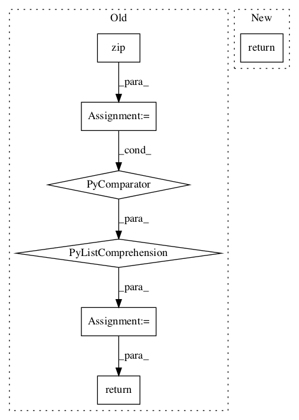

5ba781c281d60ad03d0c8088400a73802dd82d03,basenji/ops.py,,per_target_r2,#Any#Any#Any#,199

Before Change
targets_split = tf.unstack(targets, axis=-1)
weights_split = tf.unstack(weights, axis=-1)
r2_metrics = [
r2_metric(p, t, w)
for p, t, w in zip(preds_split, targets_split, weights_split)
]
r2_values = [r[0] for r in r2_metrics]
stacked_r2 = tf.stack(r2_values)
update_ops = tf.group(*[r[1] for r in r2_metrics])
return stacked_r2, update_ops
def r2_averaged_over_all_prediction_tasks(preds, targets, weights):
After Change
r2 = 1. - res_ss / tot_ss
update_op = tf.group(res_ss_update, tot_ss_update)
return r2, update_op
def r2_averaged_over_all_prediction_tasks(preds, targets, weights):
Returns ops for multi-task R2 statistic following the tf.metrics API.
In pattern: SUPERPATTERN
Frequency: 3
Non-data size: 7
Instances
Project Name: calico/basenji
Commit Name: 5ba781c281d60ad03d0c8088400a73802dd82d03
Time:
Author: null
File Name: basenji/ops.py
Class Name:
Method Name: per_target_r2
Project Name: NifTK/NiftyNet
Commit Name: 135a56e0935fbb04811f8ce7b9f514f498212f71
Time:
Author: null
File Name: niftynet/layer/crf.py
Class Name:
Method Name: ftheta
Project Name: stellargraph/stellargraph
Commit Name: bcf6d0a188ee9ba868c1de01c347f813e3aaa35c
Time:
Author: null
File Name: stellargraph/mapper/full_batch_generators.py
Class Name: FullBatchNodeGenerator
Method Name: flow